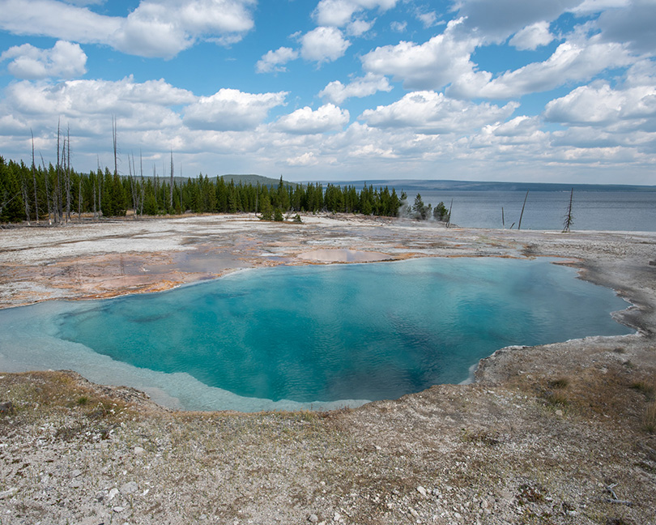
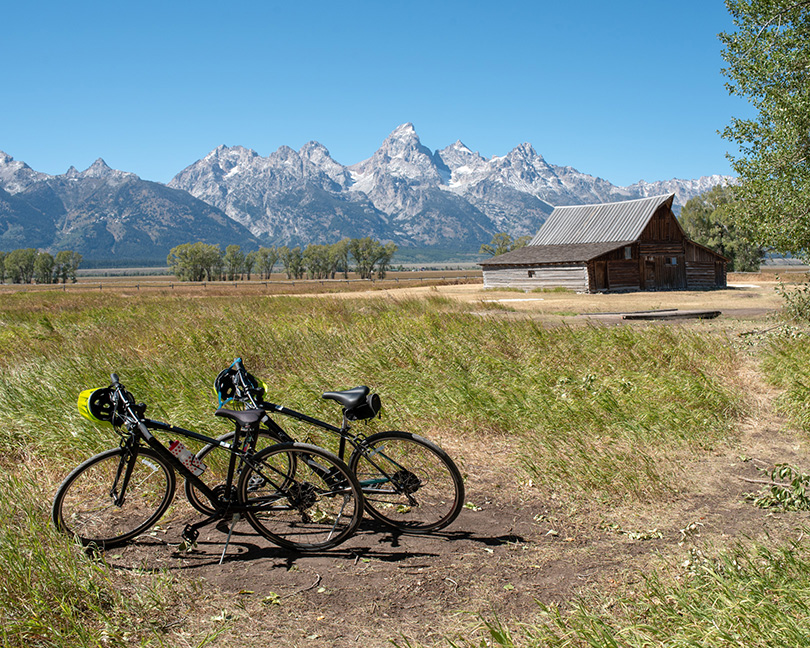

ワイオミング
イエローストーン国立公園とグランド・ティトン国立公園
ワイオミング
イエローストーン国立公園とグランド・ティトン国立公園
新型コロナウイルスの影響でヨーロッパや日本には行けない状況が続いていたので、 アメリカ国内を車で旅行することにした。 ワイオミング州にはイエローストーン国立公園とグランド・ティトン国立公園があり二つは隣接している。 ともにロッキー山脈の壮大な自然が楽しめる。
通常なら人気が高いので半年以上前に予定をたてなくてはならないこともあり、なかなか行く機会がなかった。 コロナの影響でさすがに観光客が少ないようで、今回は9月初旬の旅行だったが、一週間前の予約で問題がなかった。
 イエローストーン国立公園は1872年に世界で初めて指定され、アメリカで最も人気のある国立公園のひとつ。
南北100キロ、東西80キロの広大な公園の中央に60万年以上前の火山活動でできた直径60キロほどのカルデラがある。
阿蘇山のカルデラも有名だがその大きさは25キロほどなのでその規模がわかる。
間欠泉や温泉プールなどの主な見どころはほとんどがカルデラの中にある。
公園内には8の字の形に道があるが、下の部分がほぼカルデラ内にある。
イエローストーン国立公園は1872年に世界で初めて指定され、アメリカで最も人気のある国立公園のひとつ。
南北100キロ、東西80キロの広大な公園の中央に60万年以上前の火山活動でできた直径60キロほどのカルデラがある。
阿蘇山のカルデラも有名だがその大きさは25キロほどなのでその規模がわかる。
間欠泉や温泉プールなどの主な見どころはほとんどがカルデラの中にある。
公園内には8の字の形に道があるが、下の部分がほぼカルデラ内にある。
グランド・プリズマティック・スプリング(Grand Prismatic Spring)はイエローストーンの最大の見どころ。 鮮やかな虹色の輪に縁取られたコバルトブルーの熱水泉は直径100ｍもの大きさ。 アメリカで最大の規模の温水泉とのこと。 青、緑、黄、オレンジ、赤、茶の多彩な色彩はまさにプリズムのよう。 この多彩な色は水の温度によって違うバクテリアが繁殖するためおきるらしい。 温水泉の中央の青い部分は水温が非常に高く縁にいくにつれて温度が下がる。
グランド・プリズマティック・スプリングの全体を見渡す小高い丘には ミッドウエイ・ガイザー・ベイズンの駐車場からは直接は行けない。 車で5分をほど南にあるフェアリー・フォールズ・トレイルの入口から歩いて行くことになる。
オールド・フェイスフル・ガイザー(Old Faithful Geyser)はイエローストーンの最も有名な間欠泉。 100年以上もの間一定の間隔で噴出することからfaithfulという名前が付けらた。 高さも30−40mとほぼ一定とのこと。 ビジターセンターには次の噴出の予定時刻が掲示されている。 前回の噴出量から次の噴出を10分前後の精度で予測できるらしい。
アッパー・ガイザー・ベイスンにはオールド・フェイスフル・ガイザー以外にもたくさんの間欠泉や温水泉がある。 特に美しいのがモーニング・グローリー・プール(Morning Glory Pool)で必見。 オールド・フェイスフル・ガイザーから30分ほど歩いたところにある。
ノリス・ガイザー・ベイスンはイエローストーン国立公園の中でも最も温泉活動がさかんな地域。 ポーセリン・ベイスンとバック・ベイスンの二つのトレイルがありそれぞれ違った顔を見せてくれる。
ポーセリン・ベイスンは平坦で木も生えない開けたところで、小さな間欠泉がいくつも並び、様々な色彩のいくつも温泉がある。 温泉から流れ出る川も彩りが美しい。
バック・ベイスンは木々に囲まれた遊歩道を進むといくつかの間欠泉や美しい温泉プールがある。 スティーム・ボート間欠泉の100ｍにもおよぶ吹き出しは世界一らしいが、数日に一回の頻度で不定期なので見ることはできなかった。 それでも数メートルの高さの吹き出しは頻回に起こっていた。 エメラルド・スプリング(Emerald Spring)やシスターン・スプリング(Cistern Spring)の青い温泉プールが特に綺麗。
イエローストーン川はイエローストーン公園内を流れる一番大きな川。 この川がカルデラの外輪山の外に流れ出るときに削り取られてできた渓谷がイエローストーンのグランド・キャニオン。 深さ300mにも及び壮観。 渓谷にはアッパー・フォールズ、ローワー・フォールズの二つの滝がある。 イエローストーン川の北側ノース・リムと南側サウス・リムの両側から滝とキャニオンを楽しめる。
アーティスト・ポイント(Artist Point)はサウス・リムにあり、ローワー・フォールズと渓谷の全体が見渡せる絶景スポット。 ルックアウト・ポイント(Lookout Point)はノース・リムにあり、ローワー・フォールズを近くから見ることができる。 ここからトレイルを20分ほど下る展望デッキがあり、滝を間近に見ることができる。
 イエローストーン国立公園の南部にある湖で琵琶湖の半分もの大きさの湖。 西側の湖畔にはグラント・ビレッジ、北側の湖畔にはフィッシング・ビレッジがあり、宿泊施設やビジターセンターがある。 イエローストーン・レイクはイエローストーン川として公園外に流れ出て、 ミズーリ川からミシシッピー川を経てメキシコ湾に続いている。
イエローストーン湖が西側で親指のように突出したような部分がウエスト・サム(West Thumb)。 ここにはウエスト・サム・ガイザー・ベイスンがあり、たくさんの温泉プールがある。 特にブラック・プール、アビス・プール、フィッシング・コーンの３つが有名。
イエローストーン国立公園の北の入り口近くにあるマンモス・ホット・スプリングスは 山から流れ出る温泉の水に含まれる石灰分が年月をかけ蓄積され様々な形を作り出す。
アッパー・テラスとローワー・テラスに分かれているが、アッパー・テラスは距離も長いので車で見どころを周ることになる。 ローワー・テラスは遊歩道を歩いて周ることになる。 レット・テラス、ミネルバ・テラス、カナリー・スプリングの石灰棚が主な見どころ。 温泉の流出量は年々変わるらしく、中には枯れてしまったものもある。
ティトン山脈はロッキーの中でも最も美しい山脈とも言われ、 最高峰グランド・ティトン(標高4200m)をはじめ標高3600mを超えるいくつも山々が連なる。
山脈の麓にはジャクソン・レイクやジェニー・レイクなどの氷河湖があり美しい景観を作り出す。 ジャクソン・ホールと呼ばれる盆地には山脈やイエローストーン公園から連なるスネーク・リバーの緩やかな流れが美しい。
訪れたのが９月初旬だったこともあり、着いた時には山頂付近には氷河が少しあるだけで山には雪は殆どない状態だった。 着いた日の夜に季節外れのストームがあり盆地にも5-6センチの積雪があり、山々を一層美しく輝かせてくれた。
ジェニー・レイクは氷河期にグランド・ティトン山から滑り落ちてきた氷河による浸食や氷河が運んだ堆石物によって形成された氷河湖。 氷河湖に特有の透き通ったブルーの水と、針葉樹の緑とその背後にそびえるティトンの山々との対比が美しい。 前日降った外れの雪で一面が銀世界で格別な景観を作り出す。
当初はジェニー・レイクからティトン山の谷間を12キロほど登った先にあるレイク・ソリチュードまでのハイキングも考えていた。 熊がよく出ると聞いたので怖くなり諦めることにした。 そのトレイルの途中にある見晴台のインスピレーション・ポイント(Inspiration Point)まで登り、その後ジェニー・レイクを一周する15キロほどのハイキングをすることにした。 インスピレーション・ポイントで会った人によると前日の雪が深くてレイク・ソリチュードに行くのは無理だったそうだ。 ジェニー・レイクを渡るボートを使うとインスピレーション・ポイントまでは往復5キロほどのハイキングで十分楽しめる。 インスピレーション・ポイントからはジェニー・レイクを見渡す景色とグランド・ティトン山の山頂を間近から見ることができる。
スネーク・リバーに沿って走るハイウェイにいくつかの絶景スポットがある。 一番のおすすめはシュワバッカー・ランディング(Schwabacher Landing)。 スネーク・リバーの支流が緩やかに流れる湿地帯で、鏡写しになったティトン山脈が最高。 特に朝焼けに染まる景色は神々しい。
スネーク・リバー・オーバールック(Snake River Overlook)はアンセル・アダムスの写真で有名な場所。 蛇行するスネーク・リバー越しにティトン山脈が広がる景色が美しい。
オックスボー・ベンド(Oxbow Bend)はスネーク・リバーが大きく屈曲する場所で、川幅が広く流れが緩やかになる。 ティトン連山のひとつマウント・モラン(Mount Moran)の美しい姿が川面に映る。
 19世紀にジャクソン・ホールに入植したモルモン教徒の住居や納屋などが残っている。 雄大なティトン山脈をバックにした住居が絵になる。当時の生活が大変だったろうと忍ばれる。
ティトン山脈の麓は比較的平坦でサイクリングにはうってつけ。 自転車は公園内の町ムースか公園外のティトン・ビレッジかジャクソンでレンタルできる。 私達は泊まっていたティトン・ビレッジで自転車を借りて、車に積んで公園まで行き、 そこからジェニー・レイクやモルモン・ローまでのサイクリングを楽しんだ。 ムースからジェニー・レイクの間が特におすすめ。
 イエローストーン国立公園・グランド・ティトン国立公園ではたくさんの野生動物が生息している。
グリズリー・ベアー、ブラック・ベアー、バッファロー、ムース、エルク、ミュール・ディアー、狼、キツネなど。
イエローストーン国立公園・グランド・ティトン国立公園ではたくさんの野生動物が生息している。
グリズリー・ベアー、ブラック・ベアー、バッファロー、ムース、エルク、ミュール・ディアー、狼、キツネなど。
イエローストーンでは動物たちが道の近くにいると、みんな車を停めるので動物渋滞ができる。 特にウェスト・イエローストーンの入り口からの道沿いにはマディソン川が流れていて、 朝・夕には毎回のようにエルクかミュール・ディアーの群れが川沿いか川の中にいた。
グリズリー・ベアーはイエローストーンからグランド・ティトンに移動中に川の中を歩いているのをみたが、 写真は撮れなかった。 ムースは残念ながら一回も見れなかった。
イエローストーン国立公園（under construction）
グランド・ティトン国立公園（under construction）